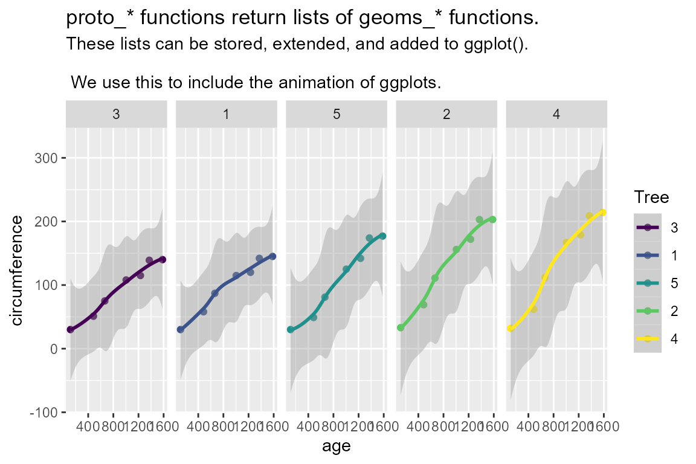

TL;DR: A proto is a list of ggplot2 geoms. Proto can be used additively, and necessarily abstract away some of the fine details. We create functions to facilitate animations of linear projections, tours. We try to parallel the the workflow of creating ggplots.
What is a proto?
We are moving to a new ‘ggproto’ API for constructing animated tours from ggplot2 objects. This interface should feel more comfortable to people already familiar with ggplot2. Ggproto is the parent class of geoms, layers, and some other plotting elements.
Proto objects (or lists of them) can be assigned to a variable without ggplot(), they store unevaluated code that will be used to plot. Let’s see what this looks like in ggplot2 before we delve into tour animations.
library("ggplot2")
library("magrittr")
## A ggproto:
gp <- geom_point()
class(gp)
#> [1] "LayerInstance" "Layer" "ggproto" "gg"
## A list of ggplot elements, a 'head-less' ggplot call
gg_ls <- list(
gp,
geom_smooth(method = "loess", formula = y ~ x),
ggtitle("proto_* functions return lists of geoms_* functions.",
"These lists can be stored, extended, and added to ggplot().
\n We use this to include the animation of ggplots."),
facet_grid(cols = vars(Tree))
)
lapply(gg_ls, class)
#> [[1]]
#> [1] "LayerInstance" "Layer" "ggproto" "gg"
#>
#> [[2]]
#> [1] "LayerInstance" "Layer" "ggproto" "gg"
#>
#> [[3]]
#> [1] "labels"
#>
#> [[4]]
#> [1] "FacetGrid" "Facet" "ggproto" "gg"
## ggplot call, without geoms, a 'body-less' ggplot call
gghead <- ggplot(Orange, aes(age, circumference, color = Tree))
## Evaluate together
gghead +
gg_ls
In the ggproto API we use this feature to create proto_*() functions, the counter-parts of geom_*() functions. These proto functions are used in composition with ggtour(), which replaces ggplot(), to create animated tours. In adopting this additive, composition approach we aim to maximize the flexibility for the end-users to customize tours while keeping the door open for extension of the development of further proto functions.
| object | ggplot2 | ggproto.api | previous.api |
|---|---|---|---|
| head | ggplot() | ggtour() | play_manual_tour() |
| body | geom_*() | proto_*() | play_manual_tour() |
| render | NA | animate_*() | play_manual_tour(render_*()) |
play_manual_tour() abstracted away complexity, but it was becoming too big, and consuming workflow which a function should venue too far into. This made it too bloated to allow for some flexibility, but hard to understand all of the arguments. By paring back to proto_* can keep details where they are more relevant without becoming overbearing in one monster function.
Why ‘proto_*’ instead of new ‘geom_*’
{spinifex} proto_* functions return a list of several geom_* functions, that were designed to facilitate animation across many projection bases. We abstract away of work and complexity that comes with creating and animating tours, but this comes at the price of flexibility. For instance, protos do not know how to deal with facets and hard-code the number and type of geoms which would otherwise become very burdensome to specify all the specifics of.
Application
Manual tour
library(tourr)
library(spinifex)
## Scale our numeric data
dat <- scale_sd(penguins_na.rm[, 1:4])
## Use species as a class to set color and shape with
clas <- penguins_na.rm$species
## Manual tour, manipulating the contribution of a selected variable
bas <- basis_pca(dat) ## Start basis
mv <- manip_var_of(bas) ## Number of the variable to manipulate
mt_path <- manual_tour(bas, manip_var = mv) ## Tour path
## Create a static ggplot2 plot with all frames of the tour
ggt <- ggtour(mt_path, dat, angle = .2) +
proto_basis() +
proto_point(aes_args = list(color = clas, shape = clas),
identity_args = list(size = 1.5))
## Animate
animate_gganimate(ggt, height = 3, width = 4.5, units = "in", res = 150)
## Or as a plotly html widget
#animate_plotly(ggt)
Grand tour, from tourr
## Save a grand tour basis path, projecting through randomly selected bases
gt_path <- save_history(dat, grand_tour(), max_bases = 3)
## Static ggplot of all frames in the tour
ggt <- ggtour(gt_path, dat, angle = .2) +
## angle is the distance between (geodesically) interpolated frames.
proto_basis(position = "right") +
proto_point(list(color = clas, shape = clas))
## Animate
animate_gganimate(ggt, height = 2, width = 4.5, units = "in", res = 150)
## Or as a plotly html widget
#animate_plotly(ggt)
1D tours
## (Quietly create) a 1d guided tour, optimizing the projection space for the holes() function
guided_path <- save_history(dat, guided_tour(holes(), d = 1))
## Static ggplot of all frames in the tour
ggt <- ggtour(guided_path, dat, angle = .2) +
proto_basis1d() +
proto_density(list(fill = clas, color = clas), rug_shape = 3)
## Animate
animate_gganimate(ggt, height = 2, width = 4.5, units = "in", res = 150)
## Or as a plotly html widget
#animate_plotly(ggt)
Interation with ggplot2 functions
because the output of ggtour() + proto_* is a ggplot, users are encouraged to theme and setting functions as well.
ggt <- ggt +
theme_bw() +
ggtitle("My Tour animation") +
labs(x = "Projection Y1", y = "density")
animate_gganimate(ggt, height = 2, width = 4.5, units = "in", res = 150)
## Or as a plotly html widget
#animate_plotly(ggt)
Faceting
dat <- scale_sd(PimaIndiansDiabetes_wide[, -9])
clas <- PimaIndiansDiabetes_wide$diabetes
gt_path <- save_history(dat, max = 7)
ggt <- ggtour(gt_path, dat, angle = .3) +
facet_wrap_tour(facet_var = clas, nrow = 1) +
proto_point(list(color = clas, shape = clas)) +
proto_basis(position = "center") +
proto_origin()
animate_gganimate(ggt, height = 2, width = 4.5, units = "in", res = 150)
## Or as a plotly html widget
#animate_plotly(ggt)
Proto functions
More protos will be added, especially as we find a use-case for them. Check the documentation for ggtour, all ggtour and proto related functions are linked in the See Also.
| proto functions | related ggplot2 function | detail |
|---|---|---|
| ggtour | ggplot | Also perfroms setup for the tour. |
| proto_point | geom_point | - |
| proto_text | geom_text | - |
| proto_hex | geom_hex | Heatmap hexegons, for high observation density |
| proto_origin/1d | NA | Line segments for the origin, the space where 0 values project to |
| proto_density | geom- _density & _rect | 1D density with run hash marks underneath, position = 'stack' not working with plotly. |
| proto_basis/1d | geom- _segment & _text | html widget, row numbers added as tooltip on hover. plotly doesn’t presicly map all ggplot2 settings; legends, point size and opacity may vary. |
| proto_default/1d | several protos | Direction and magnetude of variables to the projection disp~ |
| animate_plotly | plotly::ggplotly (with animation) | Default protos for 2/1D tours |
| animate_gganimate | gganimate::animate | gif, mp4 and other video animation. gganimate consumes native ggplots and aestheics should be consistant. |